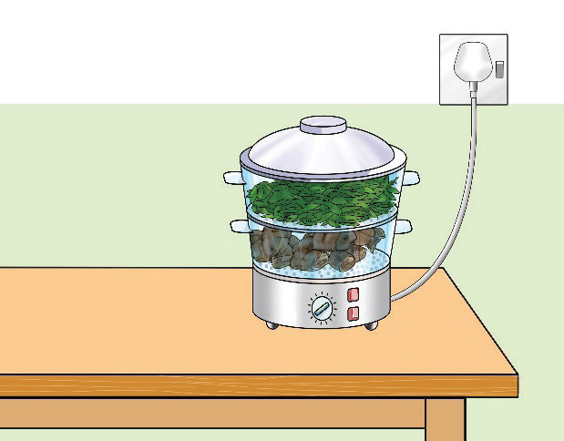

Activity 4.11
Identifying types of steaming cooking method
Watch reliable online videos or read from other sources on the vegetable steaming cooking method.
(i) What types of steaming method have you observed?
(ii) What is the benefit of using each type of steaming method?
(iii) Which type of steaming method do you prefer the most? Give reasons.
Exercise 4.6.
Explain the importance of the following practices:
(i) Adding hot water in a cooking pan while cooking vegetables by steaming method
(ii) Fitting a colander well in the cooking pan; and
(iii) Using perforated vessels during steaming.
Roasting: Roasting is a method which involves cooking food in an oven or an open fire. It is a dry cooking technique. It can be done at low, moderate or high temperatures, depending on the food to be roasted. Roasting in an oven is a common practice, and the